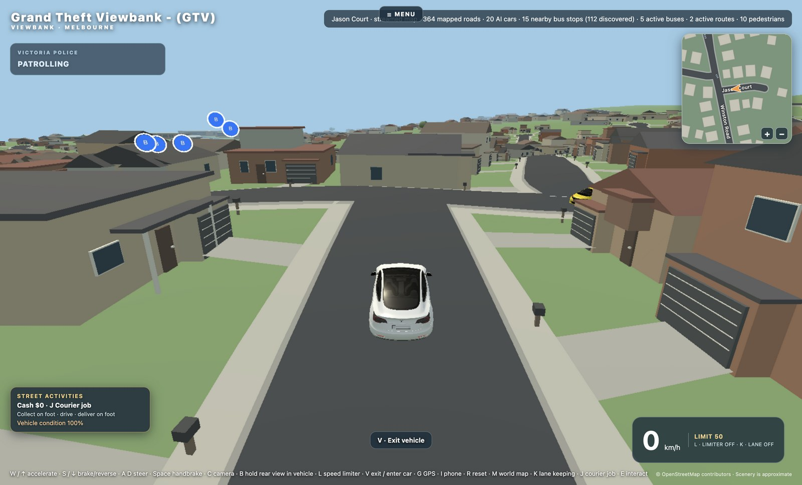
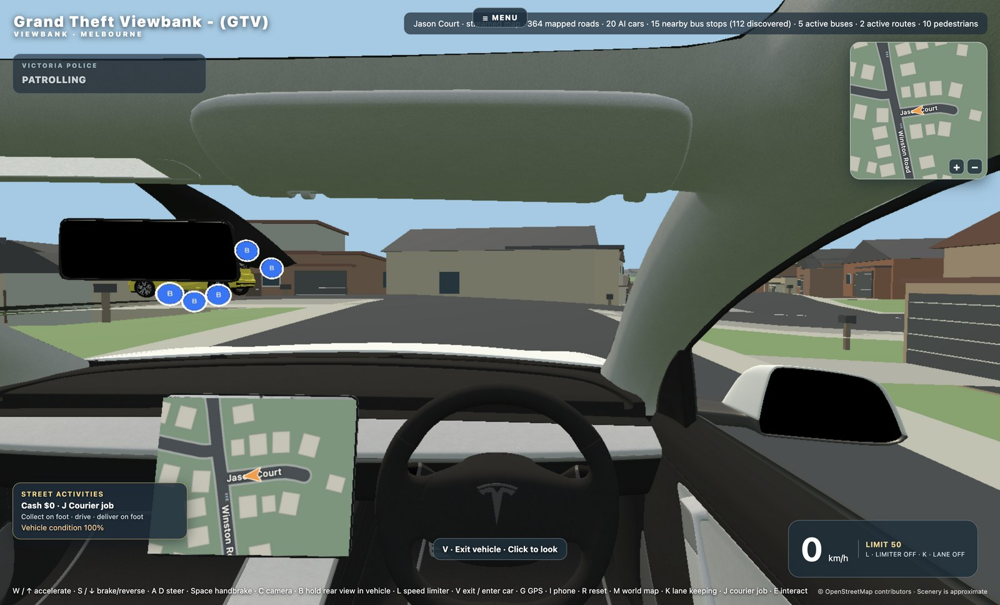
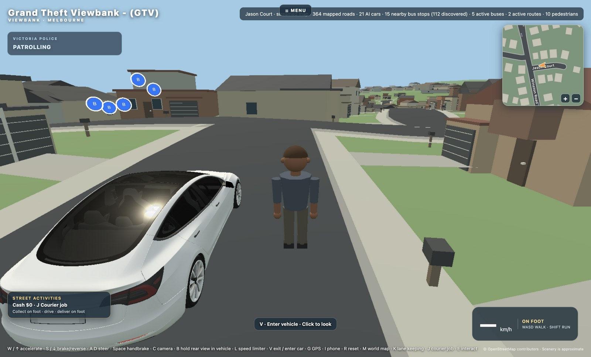

Skip to downloads
GTV
GRAND THEFT VIEWBANK
The arcade
↗
Download GTV
Version 0.2.2
Windows
x64
Intel / AMD
EXE
·
221 MB
↓
ARM64
Snapdragon / Windows on ARM
EXE
·
216 MB
↓
macOS
Intel
DMG
·
354 MB
↓
Apple Silicon
DMG
·
348 MB
↓
Linux
AppImage
x86_64
APPIMAGE
·
357 MB
↓
DEB
Debian / Ubuntu · amd64
DEB
·
359 MB
↓
SHA-256 checksums
↗
Release notes
↗
Screenshots


